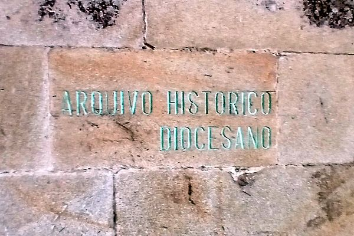
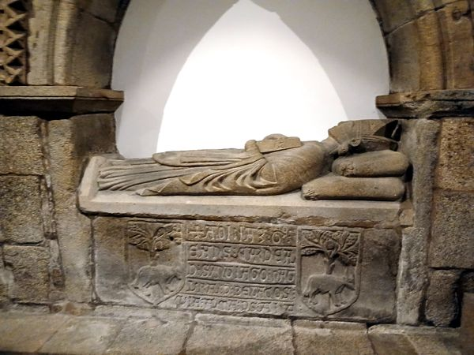

From one baptism to five generations.
A family asked us for a single document: the baptism of an ancestor who emigrated from Galicia to Havana. In four hours at the Diocesan Historical Archive of Santiago de Compostela we came back with his baptism, his father’s, his maternal grandparents’ marriage and the names of his grandparents, great-grandparents and great-great-grandparents.
The starting point was his Cuban papers: his marriage and death records in Havana said which Galician parish he came from and what his parents were called. Even the surname was uncertain: it was spelled four different ways between the Cuban papers and the eighteenth-century Galician books. It was the same family.



- People in the tree
- 319
- Generations
- 25
- Galician records
- 010
- none located6 transcribed and 4 noted
Ancestor
Parents
Grandparents
Great-grandparents
Great-great-grandparents
and 12 more great-great-grandparents to discover
- Baptisms
- The ancestor’s own (1864), a brother’s (1856), his father’s (1824) and those of two of his grandfather’s brothers (1792 and 1797), which give the names of his great-great-grandparents. We also noted three more siblings and another brother of the grandfather.
- Marriage
- His maternal grandparents’, celebrated in 1828 in the home parish. It names both spouses’ parents and opens a new lead in another parish about 35 km away, where the grandfather came from.
- Deaths
- A note in the margin of the father’s baptism gives the date of his death, in 1891. The ancestor died in Havana in 1902.
- Hamlets and distances
- The paternal line lived in the same hamlet, about 10 km from Santiago, for five generations. A great-grandmother’s parents came from a neighbouring parish about 2 km away, and the maternal grandfather from another about 35 km away. Each new parish is another series of books to consult.
To place the family we also identified, with their present-day names, the fifteen hamlets the parish served in 1856–1879: several appeared in the book under old spellings that no longer show on the map. The report ended with possible next steps: the parents’ marriage, the mother’s baptism and the other maternal lines.